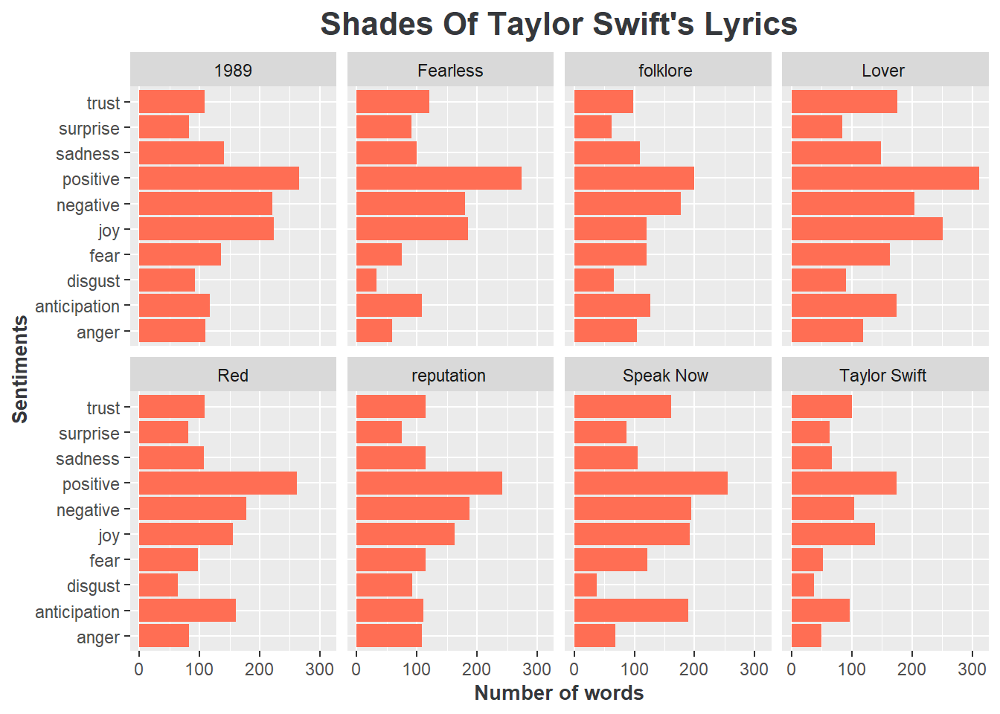

👱♀️ Taylor Swift is …
Taylor Swift, born on December 13, 1989, is highly influential American singer and songwriter. She made her debut in 2006 with the self-titled album - “Taylor Swift”, marking the beginning of an exceptional career. With 8 studio albums over 14 years of her music career that transitioned from country to pop genre, she has consistently redefined her musical style and attracted a considerable fanbase supporting her. Her estimated net worth is approximately $780,000,000, making her one of the wealthiest musicians globally. Her extraordinary talent has also earned her a multitude of awards, including multiple Grammy awards, Billboard Music Awards, MTV Video Music Awards, and American Music Awards, indicating her status as a musical powerhouse.
… A best-seller album queen 💽
What truly makes Taylor Swift outstanding is her remarkable album sales. She has consistently broken records and set new standards for album sales in the music industry. Several of her albums have achieved extraordinary sales figures, with millions of copies sold worldwide.
It is visible in Figure 1 that “Fearless” and “1989” both reached the coveted milestone of over 10 million copies sold in the United States alone. These achievements earned her Diamond certifications from the Recording Industry Association of America (RIAA), a distinction held by only a select few artists.
Taylor Swift’s accolades extend beyond the United States. Her album “Red” achieved multi-platinum status in numerous countries, solidifying her global appeal. Moreover, she has received numerous awards and recognition for her album sales, including Grammy Awards for Album of the Year.
… A chart-dominance pop icon 📈
Taylor Swift’s chart dominance is another facet of her illustrious career. Her albums have consistently topped various music charts, including the Billboard 200. Her ability to attract fans as well as music lovers and maintain chart-topping positions for extended periods is genuinely extraordinary.
Figure 2 illustrates her impressive album chart performance in the top five global music markets. It is noticeable that her debut album peaked at No.5 on the Billboard Hot 200 in the US, which is an achievement yet a challenge even for experienced artists. Since then, albums consistently peaked at No.1 on this chart. In international charts, the peak of her chart never wavered, always remaining within the illustrious top 10. 2020 witnessed a historic moment when “Folklore” gracefully debuted at No.1 on the Billboard Hot 200 chart. This achievement marked Taylor Swift’s seventh No.1 album in the United States, further solidifying her status as a chart-topping sensation.
… A storyteller with striking poetry 🎼
Beyond her sales figures and chart-topping hits in Section 2 and Section 3, Taylor Swift’s lyrics have left an indelible mark on the hearts of her listeners. Her songwriting is often described as poetic, heartfelt, and relatable. She has an uncanny ability to translate her personal experiences and emotions into music.
Figure 3 reveals the recurring themes in Taylor’s lyrics, with words such as “Love”, “time”, “wanna” prominently featured. These frequently mentioned words provide insights into the underlying themes she attempts to convey through her songwriting, which can be discovered through Figure 4.

Figure 4 demonstrates the distribution of words by sentiment in each Taylor Swift’s discography. What immediately catches the eye is the consistent prevalence of positive and joyful vibes across all her albums. However, beneath this consistency, there is a discernible evolution in mood.
In her earlier career, such albums as “Taylor Swift”, “Fearless”, and “Speak Now” deliver the positive, negative, and joy vibes as the primary theme. Yet, delving into her later albums such as “Reputation”, “Lover”, and “Folklore”, we encounter an even more diverse array of emotions. This transformation perhaps reflects Taylor Swift’s growth and evolving life experiences, which she skillfully weaves into her songs.
Whether she’s singing about the joys and heartaches of love, the challenges of growing up, or the complexities of life in the spotlight, her lyrics resonate with audiences of all ages. Fans around the world find solace and connection in her music, a testament to her extraordinary songwriting talent.
Reference
Data source
This analysis uses three data sets which demonstrate the album sales, album charts, and lyrics of Taylor Swift. Data is retrieved from Beyoncé and Taylor Swift Lyrics repository which is collected and refined by Rosie Baillie and Dr. Sara Stoudt. To assist the analysis of sentiments in Taylor Swift’s lyrics, I also use the NRC Word-Emotion data set which is loaded from third party package TidyText. This data is originally retrieved from NRC Word-Emotion Association Lexicon.
Data dictionary
sales.csv file
| Variable | Class | Description |
|---|---|---|
| artist | character | Artist name |
| title | character | Song title |
| country | character | Country for sales |
| sales | character | Sales in dollars |
| released | character | released date |
| re_release | character | Re-released date |
| label | character | Label released under |
| formats | character | Formats released as |
charts.csv file
| Variable | Class | Description |
|---|---|---|
| artist | character | Artist name |
| title | character | Song title |
| released | character | released date |
| re_release | character | Re-released date |
| label | character | Label released under |
| formats | character | Formats released as |
| chart | character | Country Chart |
| chart_position | character | Highest Chart position |
taylor_swift_lyrics.csv file
| Variable | Class | Description |
|---|---|---|
| Artist | character | Artist |
| Album | character | Album name |
| Title | character | Title of song |
| Lyrics | character | Lyrics |
nrc data set
| Variable | Class | Description |
|---|---|---|
| word | character | Vocabulary |
| sentiment | character | Words about sentiments and emotions |
Citation
Hvitfeldt E (2022). textdata: Download and Load Various Text Datasets. R package version 0.4.4, https://CRAN.R-project.org/package=textdata.
Kunst J (2022). highcharter: A Wrapper for the ‘Highcharts’ Library. R package version 0.9.4, https://CRAN.R-project.org/package=highcharter.
Lang D, Chien G (2018). wordcloud2: Create Word Cloud by ‘htmlwidget’. R package version 0.2.1, https://CRAN.R-project.org/package=wordcloud2.
Mohammad, S. M. (2021). Sentiment Analysis: Automatically Detecting Valence, Emotions, and Other Affectual States from Text. arXiv, 2005.11882. To Appear as a Book chapter in The 2nd Edition of Emotion Measurement, Elsevier, 2021.
Silge J, Robinson D (2016). “tidytext: Text Mining and Analysis Using Tidy Data Principles in R.” JOSS, 1(3). doi:10.21105/joss.00037 https://doi.org/10.21105/joss.00037, http://dx.doi.org/10.21105/joss.00037.
Wickham H, Averick M, Bryan J, Chang W, McGowan LD, François R, Grolemund G, Hayes A, Henry L, Hester J, Kuhn M, Pedersen TL, Miller E, Bache SM, Müller K, Ooms J, Robinson D, Seidel DP, Spinu V, Takahashi K, Vaughan D, Wilke C, Woo K, Yutani H (2019). “Welcome to the tidyverse.” Journal of Open Source Software, 4(43), 1686. doi:10.21105/joss.01686 https://doi.org/10.21105/joss.01686.
Wickham H, François R, Henry L, Müller K, Vaughan D (2023). dplyr: A Grammar of Data Manipulation. R package version 1.1.2, https://CRAN.R-project.org/package=dplyr.
Zhu H (2021). kableExtra: Construct Complex Table with ‘kable’ and Pipe Syntax. R package version 1.3.4, https://CRAN.R-project.org/package=kableExtra.
Session information
─ Session info ───────────────────────────────────────────────────────────────
setting value
version R version 4.3.0 (2023-04-21 ucrt)
os Windows 11 x64 (build 22621)
system x86_64, mingw32
ui RTerm
language (EN)
collate English_United States.utf8
ctype English_United States.utf8
tz Australia/Sydney
date 2023-09-03
pandoc 3.1.1 @ C:/Program Files/RStudio/resources/app/bin/quarto/bin/tools/ (via rmarkdown)
─ Packages ───────────────────────────────────────────────────────────────────
package * version date (UTC) lib source
assertthat 0.2.1 2019-03-21 [1] CRAN (R 4.3.0)
backports 1.4.1 2021-12-13 [1] CRAN (R 4.3.0)
broom 1.0.5 2023-06-09 [1] CRAN (R 4.3.1)
cli 3.6.1 2023-03-23 [1] CRAN (R 4.3.0)
colorspace 2.1-0 2023-01-23 [1] CRAN (R 4.3.0)
curl 5.0.2 2023-08-14 [1] CRAN (R 4.3.1)
data.table 1.14.8 2023-02-17 [1] CRAN (R 4.3.0)
digest 0.6.31 2022-12-11 [1] CRAN (R 4.3.0)
dplyr * 1.1.2 2023-04-20 [1] CRAN (R 4.3.0)
ellipsis 0.3.2 2021-04-29 [1] CRAN (R 4.3.0)
evaluate 0.21 2023-05-05 [1] CRAN (R 4.3.1)
fansi 1.0.4 2023-01-22 [1] CRAN (R 4.3.0)
farver 2.1.1 2022-07-06 [1] CRAN (R 4.3.0)
fastmap 1.1.1 2023-02-24 [1] CRAN (R 4.3.0)
forcats * 1.0.0 2023-01-29 [1] CRAN (R 4.3.0)
fs 1.6.3 2023-07-20 [1] CRAN (R 4.3.1)
generics 0.1.3 2022-07-05 [1] CRAN (R 4.3.0)
ggplot2 * 3.4.3 2023-08-14 [1] CRAN (R 4.3.1)
glue 1.6.2 2022-02-24 [1] CRAN (R 4.3.0)
gtable 0.3.4 2023-08-21 [1] CRAN (R 4.3.1)
here 1.0.1 2020-12-13 [1] CRAN (R 4.3.0)
highcharter * 0.9.4 2022-01-03 [1] CRAN (R 4.3.0)
highr 0.10 2022-12-22 [1] CRAN (R 4.3.0)
hms 1.1.3 2023-03-21 [1] CRAN (R 4.3.0)
htmltools 0.5.5 2023-03-23 [1] CRAN (R 4.3.0)
htmlwidgets 1.6.2 2023-03-17 [1] CRAN (R 4.3.0)
httr 1.4.7 2023-08-15 [1] CRAN (R 4.3.1)
igraph 1.5.1 2023-08-10 [1] CRAN (R 4.3.1)
janeaustenr 1.0.0 2022-08-26 [1] CRAN (R 4.3.1)
jsonlite 1.8.7 2023-06-29 [1] CRAN (R 4.3.1)
kableExtra * 1.3.4 2021-02-20 [1] CRAN (R 4.3.0)
knitr 1.43 2023-05-25 [1] CRAN (R 4.3.1)
labeling 0.4.3 2023-08-29 [1] CRAN (R 4.3.1)
lattice 0.21-8 2023-04-05 [2] CRAN (R 4.3.0)
lifecycle 1.0.3 2022-10-07 [1] CRAN (R 4.3.0)
lubridate * 1.9.2 2023-02-10 [1] CRAN (R 4.3.0)
magrittr 2.0.3 2022-03-30 [1] CRAN (R 4.3.0)
Matrix 1.5-4 2023-04-04 [2] CRAN (R 4.3.0)
munsell 0.5.0 2018-06-12 [1] CRAN (R 4.3.0)
pillar 1.9.0 2023-03-22 [1] CRAN (R 4.3.0)
pkgconfig 2.0.3 2019-09-22 [1] CRAN (R 4.3.0)
purrr * 1.0.2 2023-08-10 [1] CRAN (R 4.3.1)
quantmod 0.4.25 2023-08-22 [1] CRAN (R 4.3.1)
R6 2.5.1 2021-08-19 [1] CRAN (R 4.3.0)
rappdirs 0.3.3 2021-01-31 [1] CRAN (R 4.3.0)
Rcpp 1.0.11 2023-07-06 [1] CRAN (R 4.3.1)
readr * 2.1.4 2023-02-10 [1] CRAN (R 4.3.0)
rlang 1.1.1 2023-04-28 [1] CRAN (R 4.3.1)
rlist 0.4.6.2 2021-09-03 [1] CRAN (R 4.3.0)
rmarkdown 2.24 2023-08-14 [1] CRAN (R 4.3.1)
rprojroot 2.0.3 2022-04-02 [1] CRAN (R 4.3.0)
rstudioapi 0.15.0 2023-07-07 [1] CRAN (R 4.3.1)
rvest 1.0.3 2022-08-19 [1] CRAN (R 4.3.1)
scales 1.2.1 2022-08-20 [1] CRAN (R 4.3.0)
sessioninfo 1.2.2 2021-12-06 [1] CRAN (R 4.3.0)
SnowballC 0.7.1 2023-04-25 [1] CRAN (R 4.3.0)
stringi 1.7.12 2023-01-11 [1] CRAN (R 4.3.0)
stringr * 1.5.0 2022-12-02 [1] CRAN (R 4.3.0)
svglite 2.1.1 2023-01-10 [1] CRAN (R 4.3.0)
systemfonts 1.0.4 2022-02-11 [1] CRAN (R 4.3.0)
textdata * 0.4.4 2022-09-02 [1] CRAN (R 4.3.1)
tibble * 3.2.1 2023-03-20 [1] CRAN (R 4.3.0)
tidyr * 1.3.0 2023-01-24 [1] CRAN (R 4.3.0)
tidyselect 1.2.0 2022-10-10 [1] CRAN (R 4.3.0)
tidytext * 0.4.1 2023-01-07 [1] CRAN (R 4.3.1)
tidyverse * 2.0.0 2023-02-22 [1] CRAN (R 4.3.0)
timechange 0.2.0 2023-01-11 [1] CRAN (R 4.3.0)
tokenizers 0.3.0 2022-12-22 [1] CRAN (R 4.3.1)
TTR 0.24.3 2021-12-12 [1] CRAN (R 4.3.0)
tzdb 0.4.0 2023-05-12 [1] CRAN (R 4.3.1)
utf8 1.2.3 2023-01-31 [1] CRAN (R 4.3.0)
vctrs 0.6.3 2023-06-14 [1] CRAN (R 4.3.1)
viridisLite 0.4.2 2023-05-02 [1] CRAN (R 4.3.1)
webshot 0.5.5 2023-06-26 [1] CRAN (R 4.3.1)
withr 2.5.0 2022-03-03 [1] CRAN (R 4.3.0)
wordcloud2 * 0.2.1 2018-01-03 [1] CRAN (R 4.3.1)
xfun 0.39 2023-04-20 [1] CRAN (R 4.3.0)
xml2 1.3.5 2023-07-06 [1] CRAN (R 4.3.1)
xts 0.13.1 2023-04-16 [1] CRAN (R 4.3.0)
yaml 2.3.7 2023-01-23 [1] CRAN (R 4.3.0)
zoo 1.8-12 2023-04-13 [1] CRAN (R 4.3.0)
[1] C:/Users/Admin/AppData/Local/R/win-library/4.3
[2] C:/Program Files/R/R-4.3.0/library
──────────────────────────────────────────────────────────────────────────────